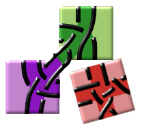

DiBL - Diagrams for bobbin lace - Thumbnails of grounds
Overview of implemented grounds.
Select a set of diagrams by changing a field
and have some patience for the thumbnails to render and let the animation complete.
N.B: Row and column count starts with zero.